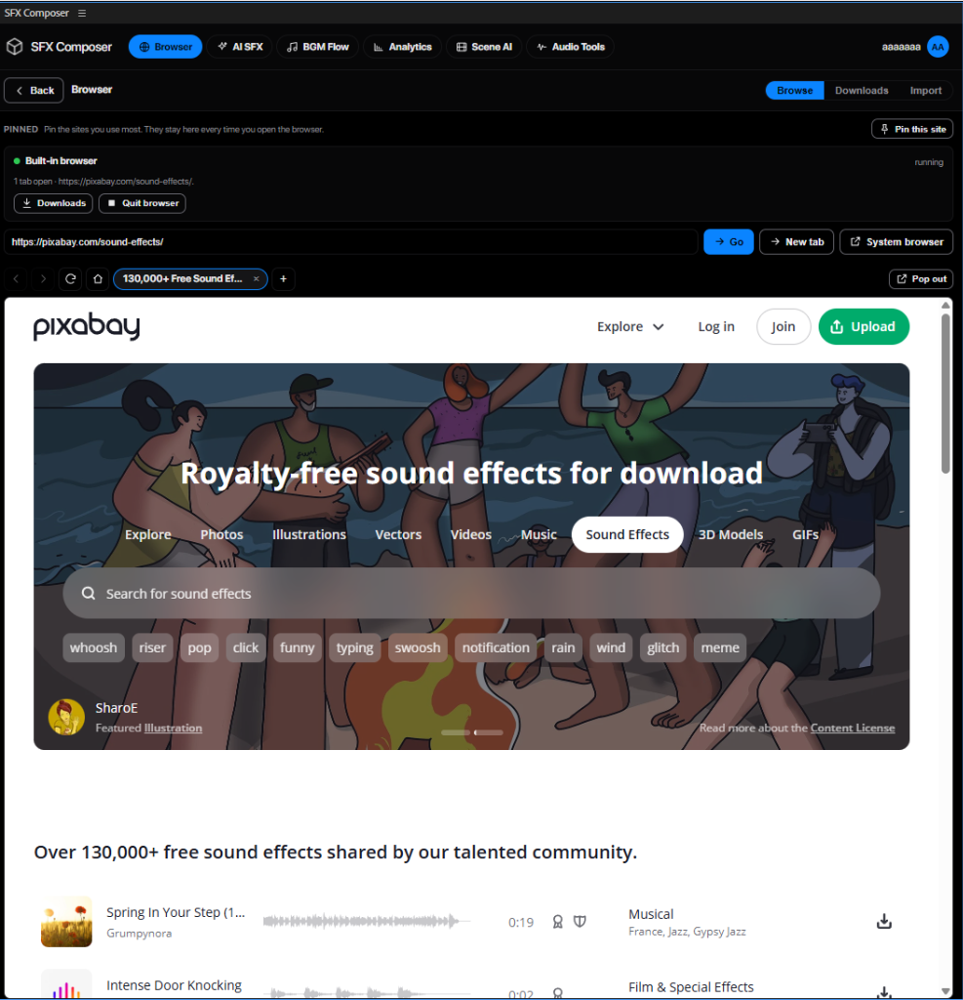
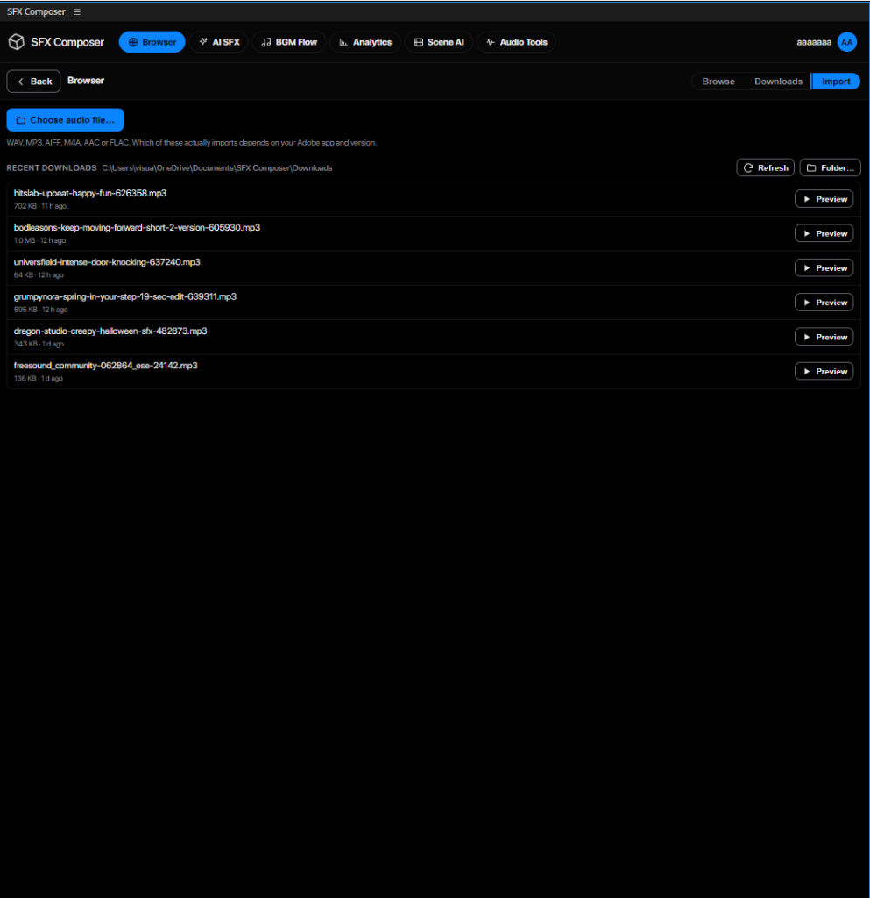
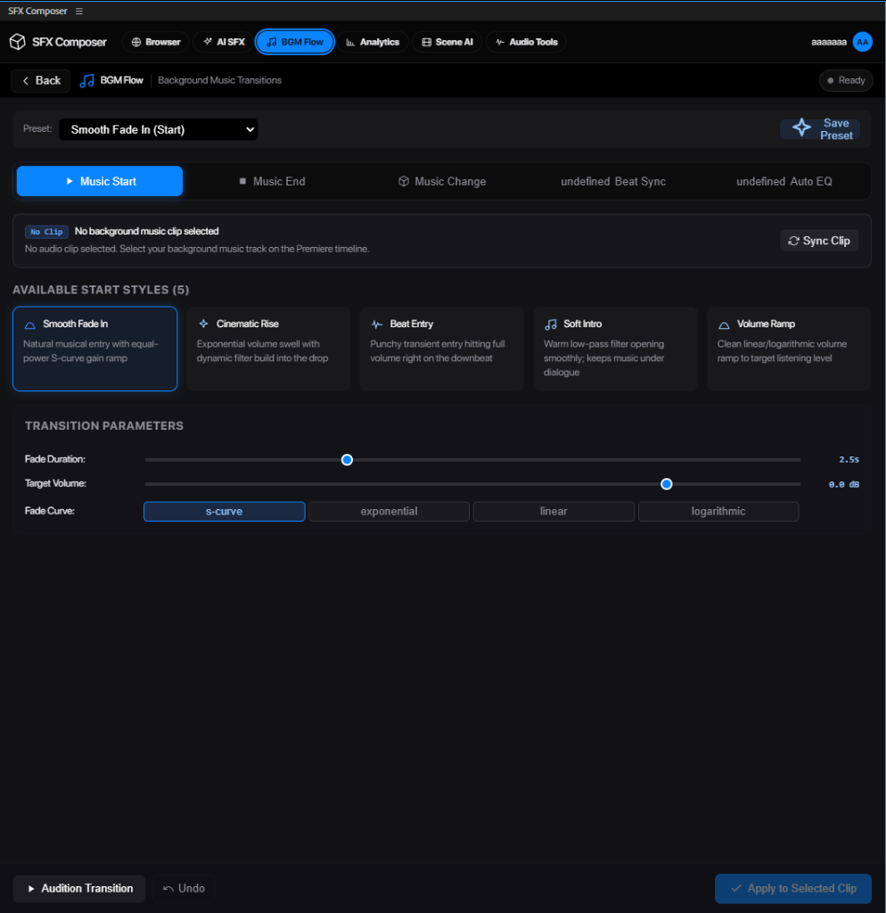

Product Images
Inspect pixel-perfect screenshots of the complete SFX Composer application interface organized by feature. Click any screenshot to open in high-resolution fullscreen view with keyboard navigation.

Find, Design, and Place SFX with Intelligent Timeline Integration
A unified, docked audio production environment featuring instant SQLite sound browsing (17,111+ sounds), local Ollama AI assistance, BGM Flow transition dynamics, 3-column Essential Sound DSP rack, and direct multi-track timeline placement.
Meet SFX Composer
A professional sound effects workflow designed to make audio editing faster, smarter and more efficient. Docked directly inside Adobe Premiere Pro and After Effects, SFX Composer connects your entire audio workflow with instant waveform browsing, multi-track timeline placement, and intelligent creative tools.

Explore Your Sound Library
Discover, organize and preview thousands of sound effects with an advanced sound browsing experience. SFX Composer combines a lightning-fast local library browser with an in-panel web companion — offering instant search across 17,111+ indexed sounds, draggable waveform In/Out boundary trimming, royalty-free online search, and multi-track sequence placement.




Your AI-Powered Sound Assistant
Find the perfect sound effects using an intelligent assistant that understands your creative requirements and searches your local sound library. Powered by local Ollama (Llama 3.2) or Cloud LLMs, the assistant analyzes your natural-language prompts, identifies matching sound characteristics, and presents ranked results with instant preview and timeline placement actions.

Intelligent Background Music Control
Create professional background music transitions with precise volume control, fade curves and automatic beat synchronization. BGM Flow provides 14 curated transition styles spanning Music Start, Music End, and Music Change modes, with adjustable fade duration, target volume, and equal-power S-curve envelopes.

Intelligent AI Timeline Control
Analyze your active composition and help build sound design directly around your timeline. Scene AI integrates directly with Adobe Premiere Pro and After Effects via CEP, checking host readiness and local Ollama inference to inspect cuts, evaluate scene energy, and execute verified timeline commands automatically.

Essential Sound Studio
Fine-tune your audio with professional processing controls and waveform-based editing. The Essential Sound Studio gives editors a dedicated 3-column workstation: quick library browsing on the left, high-precision central waveform viewer with Peak and RMS meters in the middle, and professional DSP controls on the right.